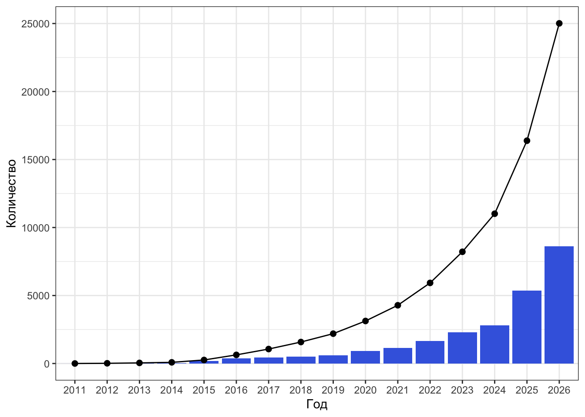

2 Основы R / Python
2.1 Знакомство с R и RStudio
— Я вот не могу выбрать: делать на R или на Python? — Да какая разница! Главное — делай!
2.1.1 Что это и откуда?
R — популярный язык программирования среди исследователей в социальных и гуманитарных науках. Если совсем коротко, то начиналось всё с языка S, который был языком программирования для статистического анализа. Потом его доработали и получился R.
Хотя сегодня всё ещё можно услышать, что «R — это язык программирования для статистической обработки данных», это ложь. Да, когда-то давно дела обстояли именно так, но сейчас R — это полноценный язык программирования, который позволяет решать широкий спектр задач от статистического анализа и data wrangling до машинного обучения, моделирования и создания сайтов и приложений.
2.1.2 Почему R?
- свободное ПО (часть GNU Project)
- динамично развивается
- громадные возможности расширения функционала
- более 10 000 пакетов
- открытый исходный код
- возможность написать свои пакеты
- большое сообщество по всему миру, много ресурсов для задавания вопросов
- Linear Warriors vs Quadratic Wizards
- в SPSS, Jamovi? JASP (и другие GUI пакеты) ниже порог вхождения, но развитие навыков — линейное
- в R порог вхождения выше, но впоследствии случается резкий буст, и вы становитесь богами дата саенс

- репродуцируемость результатов
2.1.3 R vs Python
– R лучше Python? – Нет. Но он и не хуже.

Вообще файт R vs Python, на мой взгляд, несколько бессмысленный, поскольку, по факту, всё упирается в синтаксис языка. Ну, и запрос работодателя, конечно. Возможности обоих языков и скорость работы сопоставимы. Области применения по большей части тоже. Поэтому я пользуюсь следующей эвристикой:
- аналитика, статистика, графики, покрутить данные — R
- машинное обучение, нейросети, другой ИИ, интерфейсы и [собственно] программирование — Python
Многие, наверняка, оспорят такое разделение — я же не стану отстаивать его истинность.
Мы будем работать на R, поскольку он всё же более популярен в наших кругах — среди «социально-гуманитарных аналитиков».
2.2 Установка R и RStudio
Чтобы нам радостно и приятно жилось, нужно установить:
Если что-то не установилось или вы предпочитаете облачные сервисы, то можно работать через браузер в Posit Cloud.
Заметка
Относительно недавно появился Positron — ещё одна IDEшка для R. Если у вас есть опыт работы в VS Code, Positron может вам понравится больше.
2.3 Где спросить вопрос или искать ответ?
- Google — препарат выбора
- Stack Overflow — ответы на вопросы, и не только по R
- Stack Overflow на русском — то же самое, только отечественные специалисты
- Cookbook for R — хорошая книжка для старта
- Posit Community — ответы на вопросы по R
- R-bloggers — про новинки в R и рядом с ним
- Хабр про R
- …
2.4 Интерфейс RStudio
Итак, посмотрим на RStudio. При запуске у вас откроется что-то такое (Рисунок 2.4). Видно четыре (или три1) окна. Давайте последовательно разбираться, что в каждом из них происходит.

2.4.1 Console
В консоль можно писать команды и запускать их нажатием Enter. Они будут сразу выполняться. После некоторых команд будет выводиться какой-то результат. С помощью стрелок ↑ и ↓ можно вывести предыдущие команды, например, чтобы запустить их ещё раз, не вводя повторно, или каким-либо образом их изменить.
Можно, в прицнипе, работать только из консоли, но на практике это не очень удобно. Главным образом, из-за того, что команды улетают «вникуда» и к некоторым уже будет нельзя вернуться. Поэтому существует редактор кода.
2.4.2 Code Editor
По своей сути это обычный блокнот с той лишь разницей, что здесь некоторые слова раскрашены. И в этом блокноте мы пишем текст программы (скрипт), который состоит из комманд. Чтобы выполнить команду, нам необхожимо отправить её в консоль с помощью Ctrl + Enter (⌘ + Enter). Нажатие Enter здесь как и в обычном текстовом редакторе осуществляет переход на новую строку. Результат выполнения команды отображается в консоли, как будто вы изначально запускали команду там.
В консоли удобно что-то быстро посчитать, скрипт же удобнее при работе с длинными командами и для сохранения кода (текста) для дальнейшей работы. Чтобы сохранить скрипт, сделайте File → Save (as…) или нажмите Ctrl + S (⌘ + S).
Несмотря на то, что файл сохраняется с расширением .R, это всё ещё обычный текст, который можно открыть и редактировать в любом текстовом редакторе (типа Notebook или TextEdit).
2.4.2.1 Кодировка
Компьютер умеет хранить в памяти только цифры. А текст мы набираем буквами. Поэтому ему приходится перекодировать буквы в цифры. Делать это можно по-разному — поэтому существуют разные кодировки.
При сохранении скрипта важно следить за кодировкой, особенно если в тексте встречаются кириллические знаки. В разных операционных систем разная кодировка по умолчанию, поэтому на другом компьютере файл может открываться с неведомой кракозяброй типа ?fig-encoding.
Обычно при сохранении файла с кириллицей программа автоматически спрашивает, в какой кодировке его надо сохранить. Выбирайте UTF-8 — она корректно откроется в любой операционной системе. Также вы можете сохранить файл в определенной кодировке в помощью File → Save with Encoding….
Если при открытии файла у вас отображается кракозябра, подобная той, которая показана выше, нужно узнать кодировку файла (для Win это обычно ASCII, для Mac — UTF-8) и выполнить File → Reopen with Encoding….

2.4.3 Environment (Workspace) и History
Здесь, в Environment, можно наблюдать переменные и другие объекты, которые создаются в процессе работы кода, а также некоторую информацию о них. Это удобно, поскольку код, бывает, разрастается до сумасшедшего количества строк, и что вы там насоздавали тремястами строками выше — уже и не упомнить. А тут всё под рукой.
В окне History можно найти историю команд, которые вы выполняли. Может быть полезно, чтобы не листать консоль, которая, как правило, завалена результатами и ошибками.
2.4.4 Plots, Files, Packages, Help, Viewer
Очень полезное окно в кучей всего.
- сюда выводятся графики, которые вы строите
- здесь можно найти справку по функциям и пакетам
- проверить, какие у вас установлены пакеты и их версии
- посмотреть файлы в рабочей директории
- наблюдать 3D-визуализации, превью отчетов, презентаций и много чего ещё
2.5 R как калькулятор
R — полноценный язык программирования с множеством возможностей, но давайте начнём с малого. Первое, от чего стоит избавиться — это страх консоли. Боязни калькулятора вроде не бывает (но это не точно2), поэтому стартанём с этого.
2.5.1 Арифметические операции
В R есть все привычные нам математические операции и операторы для них: +, -, *, /, ^. Выполняются они тоже вполне предсказуемо.
2 + 5 # сложение[1] 710 - 4 # вычитание[1] 63 * 7 # умножение[1] 2130 / 3 # деление[1] 102 ^ 10 # возведение в степень[1] 1024Также есть два особых деления.
5 %/% 2 # целочисленное деление[1] 25 %% 2 # взятие остатка от деления (5 mod 2)[1] 1Попробуйте посчитать что-нибудь сами.

В R есть скобки — ( ). Их назначение такое же, как и в математике. Порядок выполнения арифметических действий (приоритет операторов, operator precedence) тоже как в математике. Итого имеем:
4 * 4 + 4[1] 204 * (4 + 4)[1] 325 * 5 ^ 5[1] 15625(5 * 5) ^ 5[1] 9765625Так что используйте скобки, если вы не уверены, в каком порядке будут выполняться действия. Или смотрите таблицу приоритета операторов по команде ?Syntax.
2.5.2 Функции
Но что, если нам надо посчитать что-то более сложное? Например, извлечь корень или вычислить логарифм?
Для вычисления подобных штук существуют функции. К вопросу, что есть функция, мы ещё не раз вернемся, а пока ограничимся самым общим пониманием: функция это некоторая команда, которая имеет вид название_функции(), просит что-то указать у себя в скобках (например, число) и после выполнения возвращает нам некоторый ответ (например, снова число).
На примере с квадратным корнем это выглядит так:
sqrt(4)[1] 2А вот логарифм:
log(16)[1] 2.772589Вот только здесь есть одна важная деталь. Если мы вспомним определение логарифма, то окажется, что
\[ \log_a b = c \equi a^c = b \]
Логарифм некоторого числа — это показатель степени, в которую нужно возвести основание, чтобы получить данное число.
Здесь придется чуть углубиться в аргументы функции. Аргументы — это то самое «что-то», что мы записываем в скобках. Бывают обязательные аргументы, без которых функция просто не будет работать и выдаст ошибку, например,
log() # попробуйте выполнить эту командуи необязательные аргументы, у которых уже задано некоторое значение по умолчанию, например, аргумент base у функции log(), который отвечает как раз за задание основания логарифма.
Список аргументов функции можно посмотреть в справке по данной функции, открыв окно Help и введя в поиск название функции, или выполнив одну из следующих команд:
help(log) # ищет справку по функции
?log # синоним предыдущей командыТакже в справке можно найти много другой полезной информации.
Согласно хелпу, значение по умолчанию равно \(\mathrm{e}\), то есть вычисляется натуральный логарифм, если основание не указано. Но подождите, в хелпе не написано никакого \(\mathrm{e}\), там есть что-то странное в виде exp(1). Да, тут спорить бессмысленно, однако exp(1) — это не что иное, как экспонента от единицы, то есть \(\mathrm{e}^1 = \mathrm{e}\), что равно:
exp(1)[1] 2.718282Итак, мы выучили две важные вещи: (1) функцию exp() и то, что (2) в качестве аргументов функции можно передавать результаты другой функции. Посмотрите примеры:
log(x = 16, base = 2) # эксплицитно задаём основание и число[1] 4log(x = 16, b = 2) # имена аргументов можно не дописывать, если они не совпадают с другими[1] 4log(base = 2, x = 16) # при таком способе задания порядок аргументов можно менять[1] 4log(625, 25) # имя аргумента можно не писать, но тогда соблюдать порядок следования[1] 2log(16, base = exp(sqrt(2))) # задаём аргумент через результат функций[1] 1.960516log10(1000) # десятичный логарифм[1] 3log2(512) # двоичный логарифм[1] 9На логарифмах, естественно, свет клином не сошёлся, есть и множество других функций, например, тригонометрические (sin(), cos(), …). Да и сами арифметические операции, на самом деле, это тоже функции:
`+`(7, 3)[1] 10К функциям, как я говорил, мы ещё вернемся, а пока двинемся дальше.
Но перед этим ещё одна важная деталь. Вы, наверняка, заметили, что после команд я часто пишу # и далее текст. Это комментарии. Они крайне важны в коде, поэтому я, и не только я, настоятельно советую вам их оставлять — и чем больше, тем лучше. Сейчас это может казаться бессмысленным, но поверьте, когда ваш код будет занимать 50+ строк — а это очень небольшой код — разобраться уже будет непросто, не говоря о том, что делать, если вы открыли его через месяц или, не дай боже, год…

Закомментить несколько строк сразу можно сочетанием Ctrl + Shift + C (⌘ + Shift + C).
2.5.3 Сравнение и логические операции
Как мы знаем, числа можно сравнивать. Также мы знаем, что существуют операторы сравнения — все они есть и в R: >, <, >=, <=, ==, != — больше, меньше, больше или равно, меньше или равно, равно (ли), не равно.
Предупреждение
Обратите внимание, что сравнение на равенство осуществляется с помощью оператора ==. Одинарное «равно» (=) имеет другой смысл (см. ниже).
Посмотрим на ряд простых примеров:
2 > 4[1] FALSE2 < 6[1] TRUE3 == 5 - 2[1] TRUE7 >= 7[1] TRUE4 != 8 ^ 2[1] TRUEВроде все логично и понятно. Единственное, что стоит помнить, это то, что приоритет операторов сравнения ниже, чем у арифметических операций.
Само по себе сравнение интуитивно понятно, однако нам интересен здесь получаемый результат. Ранее мы имели дело с числами — здесь что-то другое. С одно стороны, программы выдает на слово, но это не простое слово. Это особый тип данных — логическое значение («истина» TRUE или «ложь» FALSE). Типы данных мы обсудим далее, пока же снова ограничимся простым и интуитивным пониманием.
Мы можем составлять из простых сравнений сложные высказывания с помощью логических операторов. Самые известные и часто используемые из них — «И» (&) и «ИЛИ» (|). Подробно об их смысле здесь. Если в двух словах, то «И» истинно, когда оба соединяемых им утверждений истинны, а «ИЛИ» истинно, когда хотя бы одно из соединяемых им утвердений истинно. Например,